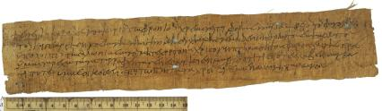

Letter from Eudaemon.
AM 4120 (=P. Oxy. VIII 1107), V/VI c. AD

Also
available: a larger image (183k)
Background and Physical Properties
Publ./Side: Recto
Material: Papyrus
Items: 1
Size: 6.4 x 31.5 cm.
Lines: 5
Negative: Transparency
Conservation Status:
Status: Published
--------------------------------------------
Contents
Date: V/VI c. AD
Provenance: Oxyrhynchus, Oxyrhynchite nome, province of Egypt
Acquisition:
Language: Greek
Genre: Documentary
Author: Eudaemon
Type of Text/Title of Work: Letter
Content: Letter from Eudaemon, with traces of an address on
verso.
--------------------------------------------
Information on Publications
First edition:
Series and volume: The Oxyrhynchus Papyri VII
Editor: A. S. Hunt
Year: 1911
Pg/Nr: 1107
Photo: